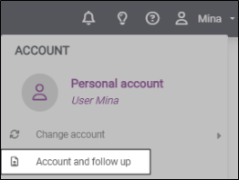
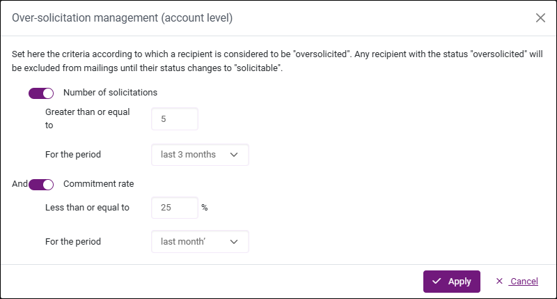

Manage Recipient Over-Solicitation
Over-solicitation refers to sending too many messages to the same recipient over a short period of time. This can lead to recipient fatigue, lower engagement, and increased unsubscribing or spam complaints. Effectively managing over-solicitation means controlling message frequency to maintain a balance between communicating with respondents and respecting their tolerance levels.
To configure over-solicitation management:
-
Go to Account and follow up on your personal account.

-
Open the Global Recipient List tab on the side menu.
In the Global Recipient List, you will find all recipients imported into the Email/SMS campaigns of your account (across all surveys). For each recipient, the number of requests indicates the total number of invitations and reminders sent to that recipient.
-
Click on Over-solicitation management.
The over-solicitation management assistant opens. By enabling the toggle switches, you can set the criteria used to determine over-solicited recipients based on:
-
Number of solicitations
-
Commitment rate
The commitment rate is calculated based on the number of responses received compared to the number of requests sent.
EXAMPLE: The goal is to avoid contacting recipients that have already been contacted 5 times or more during the last 3 months and that have at least a 25% commitment rate during the last month.

-
-
Click on Apply to confirm your settings.

Recipients' statuses will automatically update: over-solicited or Available.
NOTE: You can Export the global recipient list to Excel if it is too long to view comfortably on screen, for example.
NOTE: Once over-solicitation management has been enabled at the account level, it will be enabled by default on all distribution campaigns created later on; you will have the option to disable over-solicitation checks directly when creating a new channel.
If you have configured over-solicitation management for a channel (enabled or disabled), that channel-level setting will be kept if you disable and then re-able over-solicitation management at the account level.
BEWARE: If you delete a recipient from a channel, all solicitations / requests associated to this channel will also be deleted from the global recipient list.
Disable Over-Solicitation for an Email/SMS Channel
To ignore the account-level over-solicitation settings for a specific Email/SMS channel:
-
In the Distribution section, select the relevant channel.
-
Click on Parameters in the side menu.
-
Use the toggle switch to disable over-solicitation management for this specific channel.

NOTE: When over-solicitation is enabled for a channel, the send statistics banner in the Recipients and Manage my sendings tabs takes into account over-solicited recipients.
BEWARE: This is different from over-solicitation on automated reminders. Over-solicitation on an Email or SMS channel applies to all sends, including invitations and reminders, made via that channel.